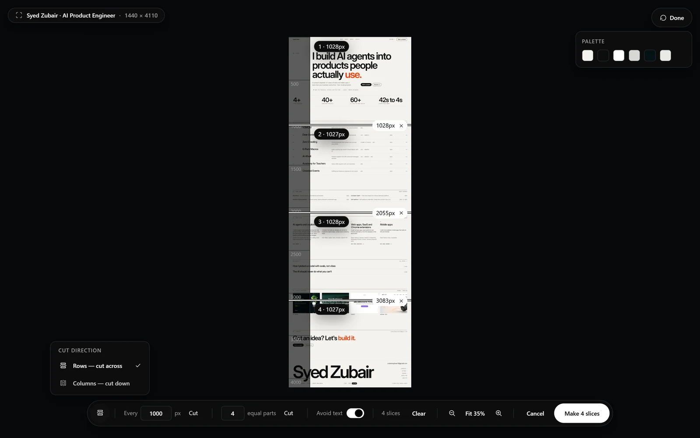

Open the slicer
On a finished capture, choose Slice from the result toolbar. The bar changes to the slicing controls and the capture stays in view, with a ruler down its left side. Nothing is cut until you press the button on the right of the bar, which says how many slices it will make.
Place the cuts
There are three ways to place cuts, and you can mix them:
- Click the image where you want a cut. A line appears with its position in pixels, and a small cross to remove it. Drag the line to move it.
- Type a number in Every and press Cut, to cut at a fixed interval such as every 1000 px.
- Type a number in equal parts and press Cut, to divide the capture into that many even pieces.
- Equal parts suit a long page you want to share as a set. Every N px suits a fixed-height format, such as a slide.
- Clear removes every cut, so you can start again. The bar also counts the slices you have made so far.
Keep cuts out of lines of text
The Avoid text switch keeps a cut from landing through a line of text. That way a sentence is not split across two images. Leave it on for pages with dense copy, and turn it off when you want a cut at an exact pixel.
Rows or columns
The button at the left end of the bar, Cut direction, chooses between two ways of cutting. Rows cuts across, which suits a tall capture. Columns cuts down, which suits a wide one, such as a spreadsheet or a timeline. With columns, the controls switch from heights to widths.

A ZIP like any other
Press the button that says how many slices it will make, such as Make 4 slices. The result is a slices ZIP, the same numbered archive Slices mode makes, with a manifest of where each piece belongs. Download it, or use Reassemble, which is on the toolbar of every slices capture, to build one image again. Reassemble puts columns back side by side as readily as it stacks rows.
- Open a finished capture and choose Slice.
- Choose a direction, then click, type an interval, or divide into equal parts.
- Press Make slices, then download the ZIP or reassemble the pieces into one image.